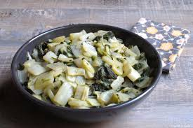
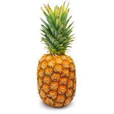

 Je hais les blettes, c'est viscérale ! Enfant, on m'en faisait manger à toutes les sauces soi disant pour ses vertues. Petite je faisais tout mon possible pour les mettre à la poubelle.
 Je déteste les ananas je trouve que cela n'a aucun goût!